Инвентаризация – это процесс пересчета товарных остатков. В процессе пересчета выявляются излишки, недостача или пересортица товаров, которые есть на складе торговой точки.
В GBS.Market проведение инвентаризации происходит в карточке инвентаризации. Открыть ее можно:
- Из меню главной формы: Документы – Новая инвентаризация
- Из журнала инвентаризаций: кнопка "Добавить"
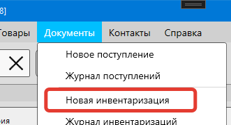
Полезные материалы
Внешний вид карточки инвентаризации
Карточка инвентаризации состоит из трех разделов
- Страница "Параметры инвентаризации"
- Страница "Процесс проведения инвентаризации"
- Окно завершения инвентаризации
Рассмотрим каждый из разделов отдельно.
Страница "Параметры инвентаризации"
Страница с параметрами инвентаризации выглядит так, как показано на скриншоте ниже.
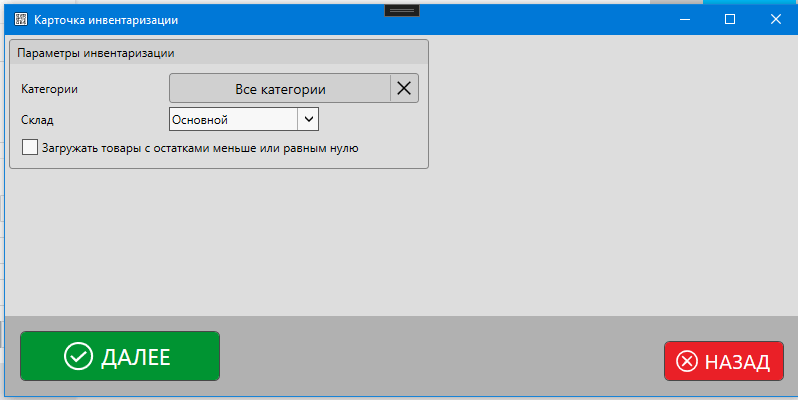
Доступны для установки следующие параметры:
- Категории товаров
- Склад
- Опция "Загружать товары с остатками меньше или равными нулю"
Категории
Нажмите на кнопку выбора категорий, чтобы выбрать категории товаров, для которых будет производиться пересчет остатков.
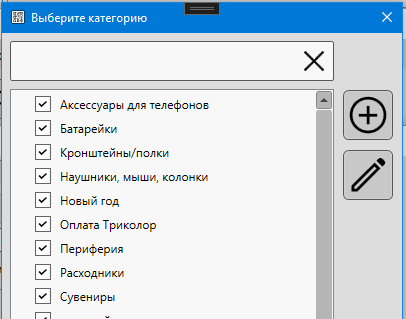
В списке выбора категорий отметьте необходимые.
Склад
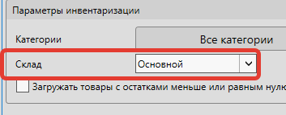
Инвентаризация может быть проведена только для остатков товаров, находящихся на одном складе. Необходимо выбрать тот склад, для которого будет происходить ревизия.
Если вы не создавали дополнительные склады – он будет один.
Загружать товары с остатками меньше или равными нулю
Если опция включена, то в список для проведения инвентаризации будут добавлены товары, в т.ч. у которых есть нулевой или отрицательный остаток.
Если опция отключена – в список будут загружены только товары с положительным остатком.
Далее
Нажмите кнопку "Далее", чтобы перейти к списку товаров, для которых будет проводиться инвентаризация.
Страница "Проведение инвентаризации"
На странице проведения инвентаризации отображается список товаров, кнопки управления, поле поиска и другие элементы управления. Выглядит страница так, как показано на скриншоте ниже.
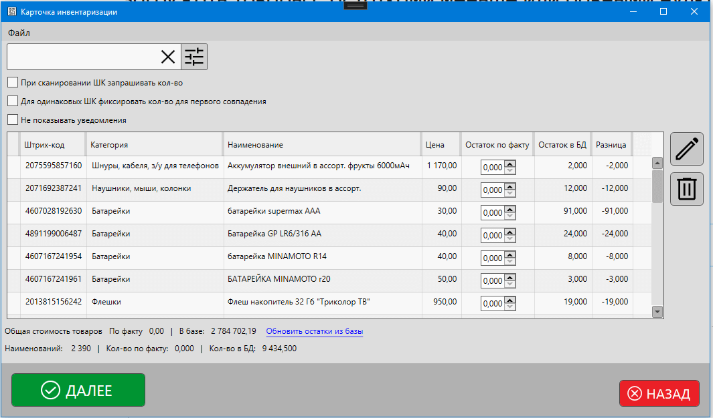
Меню формы
В меню формы доступны следующие пункты:
Файл
Сохранить как… – позволяет сохранить содержимое списка в Excel/CSV формат
В случае включенной интеграции с Barcode Harvester, будут доступны пункты:
- Barcode Harvester
- Скопировать
- Вставить
Полезные материалы
Блок "Поиск/Штрихкод"
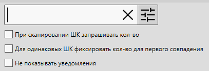
В панели "Поиск/штрихкод" доступно поле для поиска и параметры поведения программы. Нажмите на кнопку "настройки", чтобы показать дополнительные параметры.
Поле "Поиск/штрихкод"
Поле "поиск/штрихкод" позволяет изменять количество товара на остатке с помощью штрихкода или фильтровать список по названию/части штрихкода.
- Если в поле будет отсканирован штрихкод товара, то значение "остаток по факту" будет увеличено на 1 шт.
- Если будет отсканирован весовой штрихкод, то значение поля "остаток по факту" будет увеличено на кол-во, указанное в штрихкоде.
- Если в поле будет введена часть названия товара или часть штрихкода, то список товаров будет отфильтрован, значения полей "остаток по факту" не будет изменено ни для одного товара.
Полезные материалы
При сканировании ШК запрашивать кол-во
Если опция включена, то при сканировании штрихкода вместо увеличения значения "остаток по факту" будет отображено окно для ввода количества товара, найденного по совпадению штрихкода.
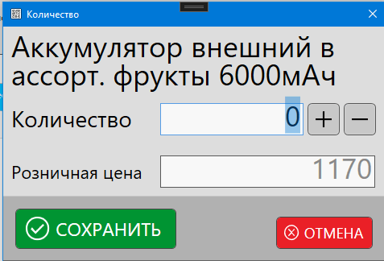
В появившемся окне необходимо установить количество товара, которое имеется на складе.
Для одинаковых ШК фиксировать кол-во для первого совпадения
Если опция включена, а по штрихкоду найдено более одного совпадения, то программа увеличит (или запросит) остаток по факту для первой записи в списке.
Если опция отключена, то поле "остаток по факту" не будет изменено, а в списке товаров будут показаны те позиции, которые были найдены.
Не показывать уведомления
Если опция включена, то уведомления об изменения остатков не будут показаны.
Если опция отключена – программа будет уведомлять об успешном изменении значения "остаток по факту".
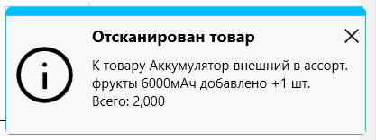
Список товаров
Пример списка товаров, для которых производится инвентаризация, показан на скриншоте ниже.
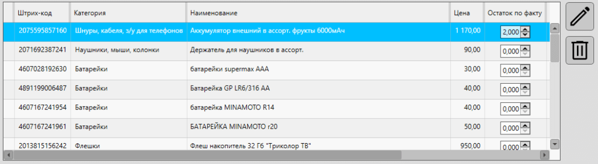
В списке доступны стандартный набор полей:
- Штрихкод
- Категория товара
- Наименование товара
- Цена (розничная)
- Остаток по факту– это кол-во товара, введенное в процессе проведения инвентаризации
- Остаток в базе – это кол-во товара, которое должно быть на складе в текущий момент времени по информации из базы данных
- Разница – это разница между остатком по факту и остатком в базе. Если значение отрицательное – имеет место недостача товара. Если положительное – излишки.
Значение поля "Остаток по факту" может быть установлено в режиме инлайн-редактирования прямо в таблице.
Полезные материалы
Редактировать
Кнопка "Редактировать" Нажмите на кнопку, чтобы изменить количество для выбранных позиций
Выберите одну или несколько позиций, чтобы изменить для них значение "остаток по факту".
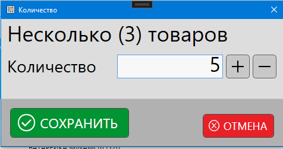
Так же вы можете дважды кликнуть по товару в списке для отображения формы изменения количества.
Удалить
Кнопка "Удалить" Нажмите на кнопку, чтобы выбранные позиции
Выберите одну или несколько позиций в списке, чтобы удалить их.
Важно
Понимать, что выбранные товары будут удалены только из списка проведения инвентаризации, а не из каталога товаров. Т.е. при завершении инвентаризации остатки этих товаров НЕ будут скорректированы, товары при этом останутся в каталоге.
Строка итогов
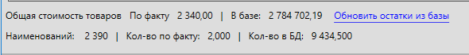
В итоговой строке отображаются суммарные значения по позициям в списке:
- общая розничная стоимость товаров по факту и в базе
- кол-во наименований
- остаток по факту и в базе
При нажатии на кнопку "Обновить остатки из базы" будет произведено обновление значения поля "остаток в базе". Это может быть полезно в случае, когда в процессе инвентаризации значение остатка для товаров изменилось.
Завершение инвентаризации
При нажатии на кнопку "Далее" на странице проведения инвентаризации – будет открыто окно завершения инвентаризации.
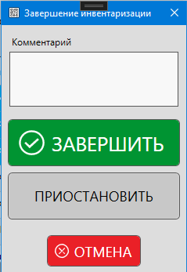
Комментарий
В поле комментарий вы можете ввести какое-то примечание к проводимой инвентаризации.
Завершить
При нажатии на кнопку "Завершить" документ инвентаризации будет сохранен в базу данных. Для товаров, которые были в списке на пересчет остатков, будут скорректированы остатки, согласно значению поля "остаток по факту".
Важно
Если для каких-то товаров вы не изменили значение поля "остаток по факту", то их остатки в базе данных будут установлены равными нулю. Перед сохранением инвентаризации убедитесь, что вы корректно указали значение поля "остаток по факту".
Для восстановления обнуленных остатков потребуется удаление инвентаризации.
Посмотреть остатки товаров можно в каталоге товаров, а факт проведения инвентаризации будет отображаться в журнале в карточке товара.
Приостановить
При выборе варианта "Приостановить" документ инвентаризации будет сохранен со статусом "Черновик".
Остатки товаров, для которых происходит пересчет – не будут изменены. Инвентаризацию с таким статусом можно будет продолжить из журнала инвентаризаций.
Отмена
Форма завершения инвентаризации будет закрыта для возможности продолжить работу с текущим списком товаров. Сама инвентаризация при нажатии этой кнопки не будет отменена.